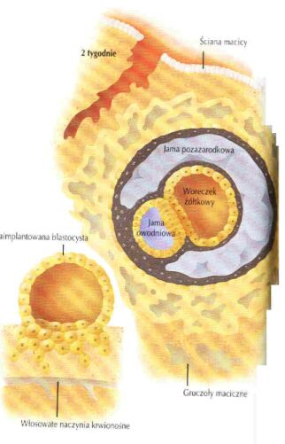
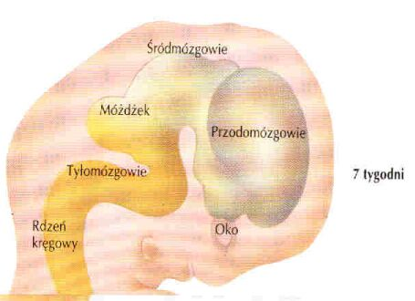

Pierwsze neurony: w 4-5 tygodniu ciąży, z ektodermy, dzięki ekspresji genów homeotycznych, podobnych muszki owocówki do człowieka. Wzrost - czynniki neurotroficzne, NGF (neuron growth factor). Mutacja jednego genu LIS 1 z chromosomu 17 daje w wyniku brak pofałdowania kory mózgu.
W 5 tygodniu postają pierwsze neurony. Neurony dzielą się ok. 70-100 razy a potem przestają. Cewka nerwowa u wszystkich kręgowców tworzy 5 pęcherzyków.
Z 5 pęcherzyków: rdzeniomózgowie, tyłomózgowie (most i móżdżek), środmózgowie (nakrywka pnia mózgu i pokrywa), międzymózgowie (układ limbiczny, oczy, szyszynka) i kresomózgowie (kora nowa, układ węchowy, jądra podstawy mózgu.
Zawiązki móżdżku u człowieka dopiero w 12 tyg. Szybka faza rozwoju, następnie regresji, zwanej apoptozą. W korze mózgu 50 do 90% wymiera, znaczna reorganizacja kory.
Szlaki nerwowe powstają przed receptorami. Rola czynników wzrostu. Maksymalne tempo wzrostu mózgu - 5 miesiąc; do 1 roku po urodzeniu.
4 miesiące:
- 15 schematów ruchowych, pierwsze specyficzne odruchy.
- Reakcje na światło.
- Na poziomie pnia mózgu - nieregularna aktywność elektryczna.
- Różnicowanie wrażeń smakowych.
5 miesiecy:
- Smak w pełni sprawny.
- Reakcje na dźwięki.
6 miesiąc: odróżnialny sen i czuwanie, rekacje na mowę.
8 mc. sen REM i ruchy oczu.
Narodziny: duży mózg sprawia najwięcej kłopotów, chociaż jego masa to zaledwie 1/4 mózgu dorosłego. Gwałtownie wzrasta gęstość synaptyczna połączeń miedzy neuronami, w korze od 2500/neuron w momencie narodzin, do 15000 w wieku 3 lat i spada powoli do połowy tej wartości. Aktywność mózgu (w sensie zużycia energii) rośnie, w weiku 2 lata osiąga poziom dorosłego, w wieku 3 lat przewyższa go dwa razy i utrzymuje się do 9-10 roku życia, po czym powoli się zmniejsza by osiągnąć stabilny poziom koło 18 roku życia.
Rok po urodzeniu kora ruchowa łączy się z lędźwiową częścią rdzenia kręgowego, zanika odruch Babińskiego.
2 lata - masowa reorganizacja kory mózgu, amnezja dziecięca.
6 lat - mózg 3x większy niż w momencie narodzin.
Ok. 12 lat - stabilizacja płatów czołowych.
Ok. 20 lat - koniec reorganizacji, niewielkie zmiany (?) przez całe życie.
Każdy ma inny mózg, nawet bliźnięta jednojajowe (zdjęcia fMRI). Odżywianie, zatrucia chemiczne, skład chemiczny wód płodowych ma wpływ na rozwój mózgu.
Źródło: http://www.fizyka.umk.pl/~duch/Wyklady/kog-m/01.htm#ewo